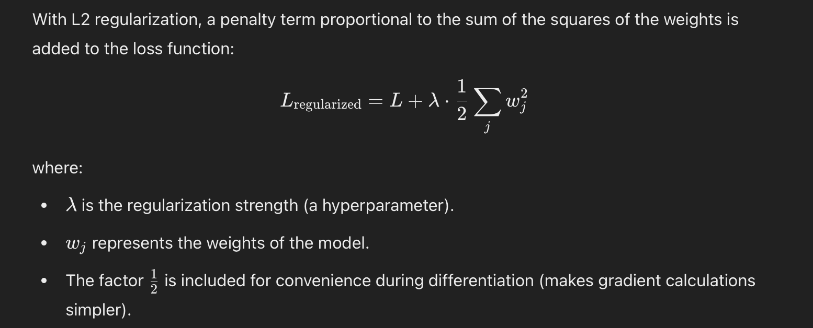
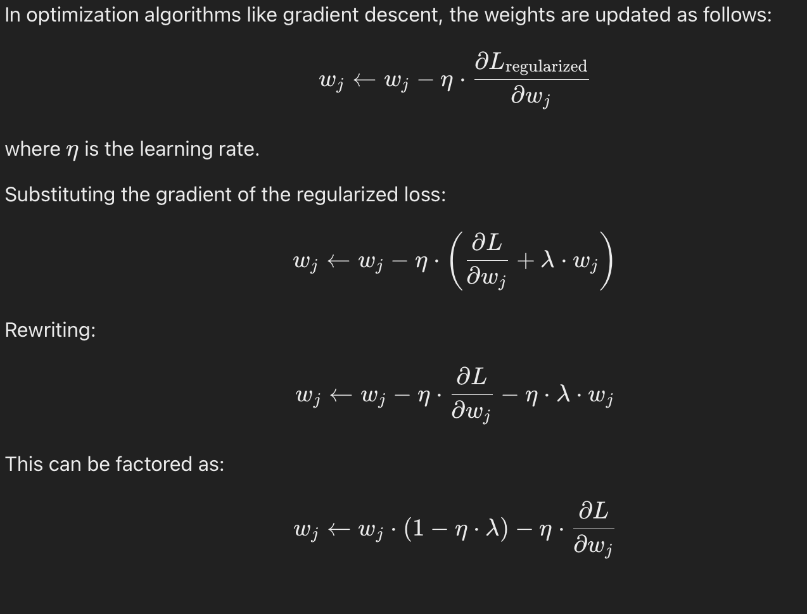

- it penalizes the weights, and prioritizes uniformity in weights.
How does it penalize the weights?

Now when we do the backprop and gradient descent.
The gradient of loss w.r.t some weights become
 as we can see it penalizes the weight by reducing the weights’s value by some higher amount compared to the some minimial weight update when we only used loss function.
So overall, the model tries to balance the Loss (L) as well as keep the weights small. This balance prevents the model from relying excessively on any particular weight.